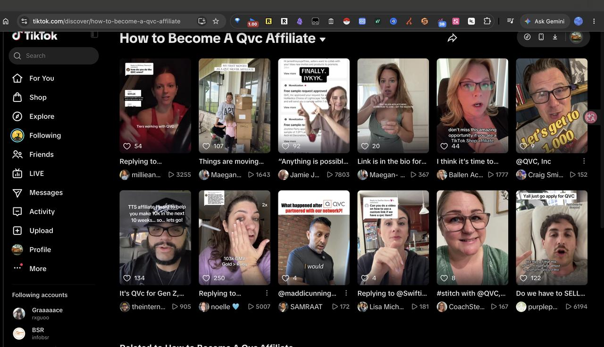
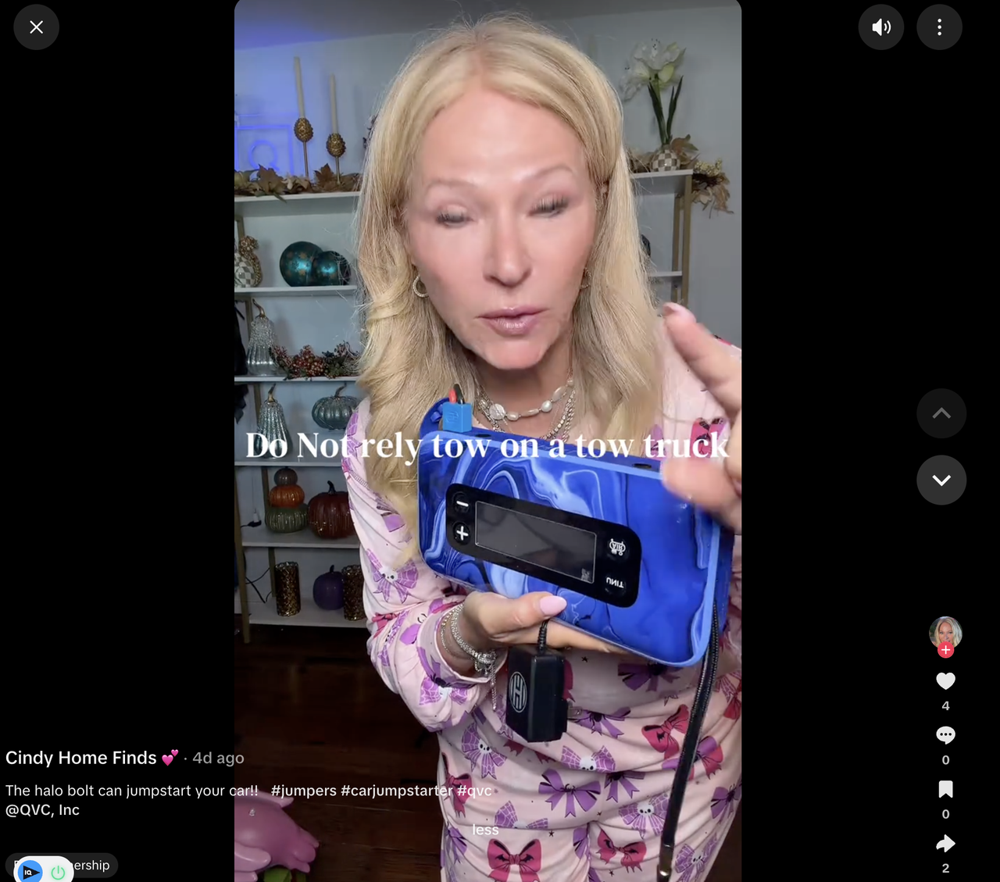
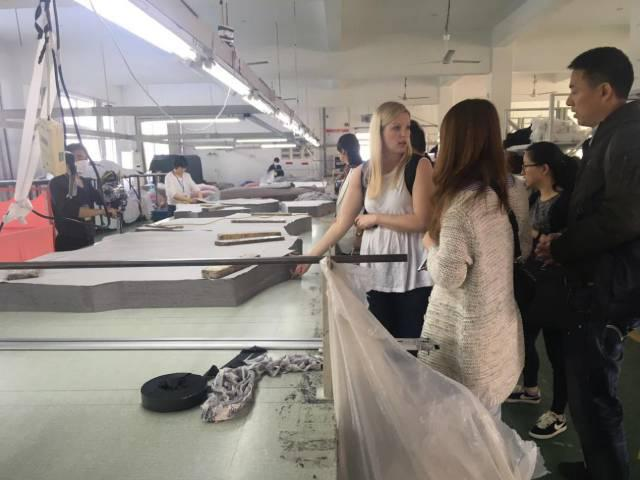
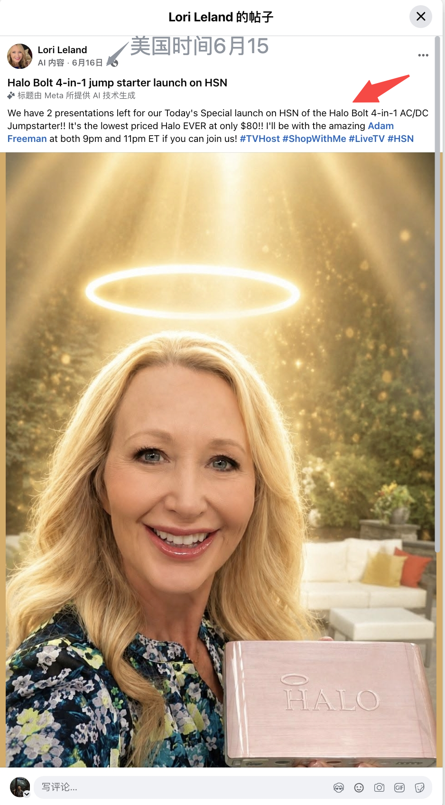
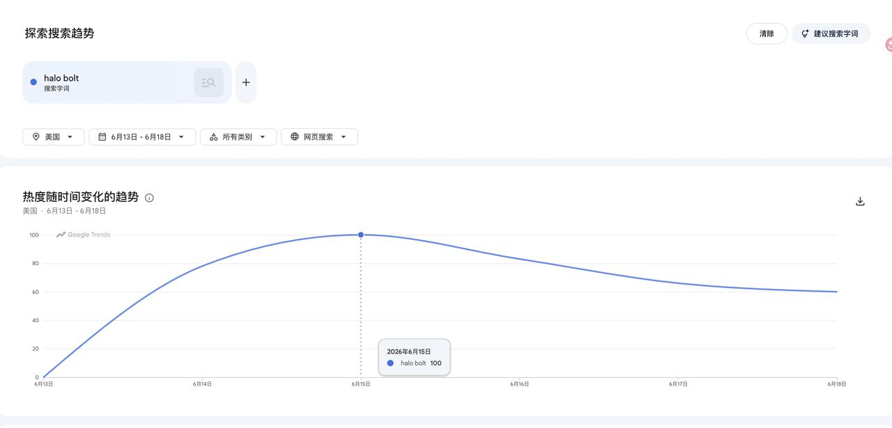
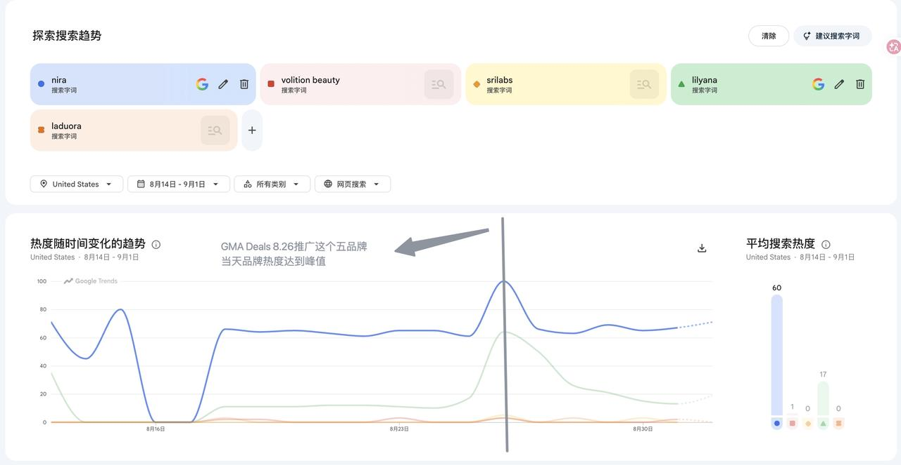
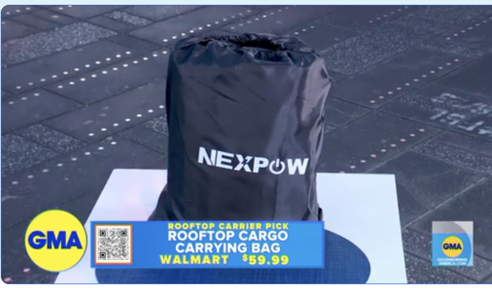
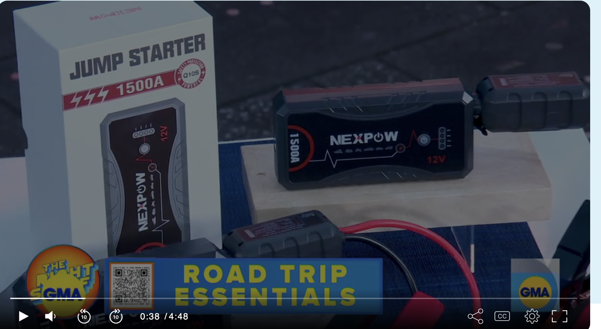

上方时间线已带我们梳理了中美 40 年直播购物的编年史、观看了各渠道的直播案例；接下来通过分类讨论的方式，深入理解各个渠道的特点。
电视是单向、定时、稀缺的媒介——频道有限、有节目表、观众只能看不能说。这种「单向、定时、稀缺」本身就是权威的产物。因此像 QVC、GMA Deals 一样的电视购物直播有一套严格的选品、直播推品流程，灵活性低，产品准入门槛高。拿实体零售作比，就是一个花高价摆在商场一楼正中的展台。
互联网是双向、实时、海量的媒介——人人能开播、随时能播、弹幕评论连麦实时沟通，因此是去中心化的。TikTok 主播和品类成千上万，随时都有人开播，观众边看边问边砍价，主播根据实时反馈现改话术，边聊边买，好比夜市摆摊。
2B：QVC、HSN 在产品审核通过后通常要求按采购价买断进行合作，卖家把货寄送到指定仓库，钱货两清后库存与售卖由平台全权负责，商品通过他们自己的独立站和 app 出售。据某券商统计，QVC 毛利在 35–40%，他们注重靠选品、供应链、议价来维持高毛利水平。
入驻 TikTok 之后，QVC 将商品上架官网的同时也同步上架 TikTok Shop，同时运营自己的 TikTok Affiliate（如何成为 QVC affiliate）。以 QVC 多年合作产品 Halo Jump Starter 为例，TikTok 上大量红人推广的 tag 带 QVC。


GMA Deals / CBS Deals：不买断，走一件代发——平台接单后由卖家直接发货，按采购价结算。同为 2B，但库存风险留在卖家。
2C：TikTok Shop / Whatnot / eBay Live 都是搭建了一个直播平台，让卖家直接面对客户成交。平台不买断、不囤货，只抽佣，卖家或主播自己开播卖货、自负库存与履约。
高门槛：QVC / HSN / GMA Deals 等有专门的工作人员负责选品、议价，对供应链、产品质量、库存深度、折扣有较高的要求。品牌提交意向后，需要等待采购挑选。
这类节目本身就代表一种权威——他们要对自己挑出来的产品负责，卖砸了砸的是自己的牌子。强背书的另一面就是高门槛。

低门槛：TikTok、Amazon、eBay、Whatnot，拥有基本资质就能开店，几百万卖家同台。相应地，平台借力也少，平台只提供流量池，成交更多靠品牌方自己把直播间运营好，或者找对达人直播间去借流量，信任靠自己建立。
电视导购、TikTok 做的是一口价；eBay Live 和 Whatnot 做的是拍卖。
一口价（定价售卖）很好理解：大多数产品可横向比价，一搜就有替代品，所以电视导购和 TikTok 直播能吸引人的关键在于直播间的限时限量促销制造冲动。
Whatnot 直播间的成交品类和主流电商平台很不一样：卡牌类占六七成，收藏钱币、女装、奢侈品各占一成左右。卡牌 / 收藏圈能撑起直播交易是因为藏品有稀缺性，买家需要到直播间蹲好货蹲好价。
而对大量不卖收藏卡牌钱币的中国商家来说，他们把 TikTok 直播间那一套打法搬到了 Whatnot 和 eBay Live 上，大多用来清尾货、卖二手。同样是制造紧张感，普通直播间制造「限量」的紧张感，竞拍直播间创造了决策时间紧张的感觉以及引入了和其他观众的竞争，催促观众跳过「需求 → 搜索 → 比价 → 决策」的理性链条，进行下单。
出价那一刻，消费者常常会产生了「心理所有权」——这件商品仿佛已经属于自己。一旦被别人反超，损失厌恶会驱使他不断追价，把「自己的东西」抢回来。而低起拍价又锚定了一个「并不贵」的初始印象，让人一路加价也不觉得肉疼。所以，直播竞拍有时能拍出比平销更高的价格。
大致了解各直播渠道后，仍有以下几个疑问，于是查了一些资料试图给出解释（仅供参考）。
美国整体直播电商交易量为什么比中国小一个数量级？
这是一个很大的问题，这里无法给出定论，仅以讨论形式呈现观点。
中国从 2016 年就成体系地布局直播电商上下游——平台、主播、MCN、供应链、支付。而美国，TikTok Shop 2023 年才正式上线，Amazon 直播做了多年始终没起来。同时面对 TikTok 的禁令威胁，商家在政策不明朗时选择观望，平台也放慢了投入和基建节奏，整个布局进度自然就滞后了。
很多地方说美国人购物更理性、中国人更冲动，这种说法比较荒谬，不同论文、不同样本研究甚至会得出完全相反的结论。
TikTok Shop 在 2026 年又实现了翻倍增长。可以预见，随着时间推移，美国的直播电商体量会越来越大。
晨间电视节目 CBS Mornings 为什么在 2022 年——手机直播购物愈发发达的时间点——增加电视导购环节？
流媒体持续分流观众，传统电视广告收入一路下滑，新闻部门必须找新收入源——增加购物环节是变现效率最高的方式。
CBS 长期坚守纯新闻立场，因此 NBC Today 2010 年插入导购栏目、ABC GMA 2011 年跟进时它都没有加入。而 NBC 和 ABC 的 4 分钟购物专栏，都已经做到了每年千万美金级别的收入。
Whatnot 和 eBay Live 为什么在美国市场做得这么好？电视购物时代是否有类似的直播拍卖？中国互联网直播是否有这样的模式？
eBay 起家时就是做收藏品拍卖，有二手和收藏品（球星卡、球鞋、周边……）的文化土壤；2000 年左右交易模式增加了定价售卖和开放小刀。
电视购物时代，只有苏富比 / 佳士得这样的高端拍卖转播。电视转播是极高成本的投入，而拍卖的节奏是一件一件、一单一单地拍；如果拍卖日常消费品，根本不足以覆盖运营成本。所以电视购物时代，只有高客单、高毛利的收藏品拍卖转播。
中国也有直播竞拍：早期有做文玩竞拍的微拍堂，2019 年从原先的图文竞拍拓展到直播竞拍；抖音 2021 年开通了直播拍卖。
QVC 和 TikTok Live 都有「货找人」「全品类」的特点，且各自是电视购物时代、互联网直播时代的龙头，二者的直播受众画像有何改变？带货品类是否也有变化？
市面上大都流通二手、三手的数据。
QVC 频道的核心盘是 50 岁以上女性，平均年龄接近 60 岁，女性占比约 80–85%。TikTok 整体用户虽年轻（68.8% 是 18–34 岁），但在 TikTok Shop 购物的人年龄更大：YouGov 2025 显示 35–54 岁购买率最高（41%），18–34 岁只有 26%。
电视时代，QVC 的品类结构是「珠宝起家、家居称王」——1990 年代珠宝一度占销售额 1/3 以上（起步期约 50%），2000 年代后 Home 取代珠宝稳坐第一（长期占 37–45%），一直保持到 2019 年。TikTok Shop 是「美妆 + 女装」的视觉冲动型结构——美区美妆个护 GMV 达 18.3 亿美元、女装内衣约 12 亿美元，前三大类目（美妆、女装、健康）合计吃掉美区超 41% 的销售。
说明：TikTok 侧数字均为 TikTok Shop 整体 GMV，未见 TikTok Live 直播带货口径的数据披露。
我们公司卖的是普通的电子消费品。根据上面的讨论，应当尝试电视直播、TikTok 两个直播渠道。TikTok 我们已有团队在做，并在一定程度上验证了这个渠道带动销量、带动声量的能力；这里主要分享电视节目相关的品牌案例，考量我们品牌是否可能借助电视导购节目涨声量、引流量。
QVC 直播主持人 2026/6/15 当天提前预告 Today's Special 是 Halo Bolt Jumpstarter，当日品牌声量上涨。


2026/8/26 直播，引流到 goodmorningamerica.com 下单（当日栏目链接）；当天被推荐的 5 个品牌，声量均上涨。

2024/5/17「car essentials」主题户外直播，引流到亚马逊 / 沃尔玛成交（属于付费版位类合作，不是常规的采购模式，栏目链接）。NEXPOW 品牌名多次露出，但 Google Trends 未见当天热度上涨；被推广的充气泵亚马逊 BSR 前三，未见当天排名上升或冲顶。


品牌可以通过赞助产品，在节目上进行曝光（节目官网）。该节目单集稳定有 400 万观众，是美国日间电视的头部节目，观众画像偏女性 25–54 / 家庭主妇，正好是家庭采购决策人群。
2026/7/1 播出的节目中，Bird Buddy 智能喂鸟器在节目中作为竞猜产品露出，当天品牌声量上涨。